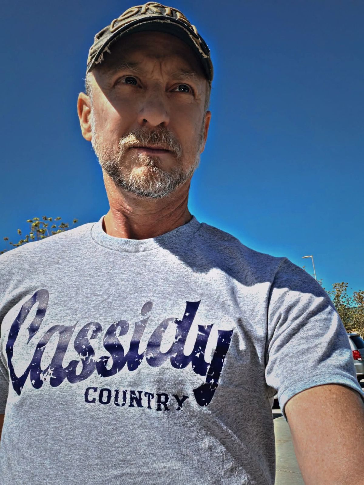
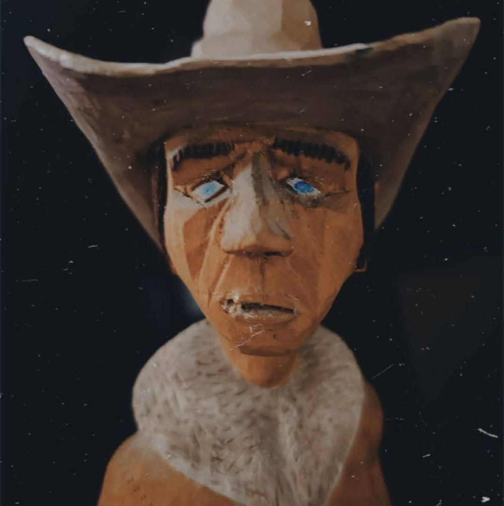

Host of RC's Social Saloon, middays on Country ONE in Omaha, and the storyteller behind Cassidy Country.

Across the country from New York to California, Washington state to Florida, Texas and everywhere in between.
Stream at countryoneomaha.com or on the free Country ONE app for iPhone and Android.

Ritch's Uncle Jimmy carved this cowboy in 1983, and Ritch's dad passed it down to him. Ritch has carried it for years. Now it's the Cassidy Country logo.
Ritch Cassidy has worked in country entertainment since 1997, interviewing legends and current stars including George Jones, Kenny Rogers, Garth Brooks, Eric Church and Dolly Parton. He has hosted events for CMT television and radio, written for country music publications and collaborated with artists on social media projects.
Off the air, he's in the kitchen with his wife, their three boys and his sidekick Boonie, writing the next big country song.
Sang with Garth over the phone in the middle of an interview.
A "This Is Your Life" surprise with messages from Blake's high school teachers.
Ten straight days broadcasting live from the CMT radio trailer.
Wrote for Country Weekly.
Reach Ritch's studio inbox at:
rcmediabrand@outlook.com